Many of our rules are copies or variations of rules to be found in the 1987 book, Cellular Automata Machines, by Tommaso Toffoli and Norman Margolus. For each of our rules, the table below gives the most closely related rules from [Margolus&Toffoli87], with page number. Where our rule is identical to the one from Margolus & Toffoli, we put an equals sign.
| JC Name | Same? | Margolus & Toffoli Related Rules | Page | |
|---|---|---|---|---|
| Aurora | ||||
| Axons | ||||
| Balloons | ||||
| Bob | ||||
| Border | = | Border/Hollow | 113 | |
| BraiLife | ||||
| Brain | = | Brian's Brain | 47 | |
| Dendrite, DenTim | Naive-Diffusion, Dendrite | 84, 168 | ||
| EcoLiBra | ||||
| Faders | ||||
| Flick | ||||
| Fractal | = | Me-Neither | 132 | |
| FredMem | Parity (w/7 bit Echo) | 31 | ||
| Gyre | ||||
| Heat, HeatWave | ||||
| HGlass | = | Hglass | 29 | |
| Hodge | ||||
| Langton | ||||
| Life | = | Life with Echo | 23 | |
| Parks | ||||
| PerfumeT | = | TM-Gas/Walls | 160 | |
| PerfumeX | HPP-Gas (w/Wall) | 123 | ||
| Pond | TM Gas, Circular wave | 131, 172 | ||
| RainZha | ||||
| Ranch | ||||
| RevEcoli | ||||
| Rug, RugF, RugLap | ||||
| ShortPi | ||||
| Soot | TM-Gas, Dendrite | 131, 168 | ||
| SoundCa | ||||
| Sublime | = | 2D-Brownian | 156 | |
| TimeTun | = | Time-Tunnel | 52 | |
| Venus | ||||
| Vote | Anneal (w/1 bit Echo) | 41 | ||
| VoteDNA | ||||
| XTC | HPP-Gas & TM-Gas | 123, 131 | ||
| Zhabo, Zhabof, Zhaboff | = | Tube-Worms | 83 |
Now I'm going to say a little about each of these rules, taking them in alphabetical order.
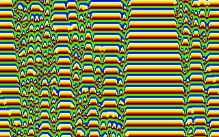
The worldtype used here is that of a 1D two-neighbor ring. That means that EveryCell can see the low four bits of its left (west) neighbor and the low four bits of its right (east) neighbor. We call these two fourbit quantities L and R respectively, and call the low four bits of EveryCell's own state C. Thus we are looking at a rule where cells effectively have sixteen states: binary 0000 through binary 1111 or decimal 0 through decimal 15.The rule for Aurora is a one-dimensional version of the RC Rug rule: EveryCell's new state is taken to be one greater than the neighborhood average of L, C, and R. That is, we have
When a color value reaches 16, it is rounded back down to 0. The effect produced is like globby paint running down the screen, though really you are seeing "one-dimensional gliders" moving back and forth and interacting. Programs defining the Aurora rule are available in the Pascal, C, and BASIC languages.
I called the rule Aurora because when I visited Norman Packard's
office at the Institute for Advanced Study in 1985, he showed me a
smoother (eight visible neighbor bits and 255 colors) version of this
rule and remarked that it looked like the northern lights.
Aurora is one of five predefined 1D rules we include with JC, the
other being Axons, Parks, ShortPi, and SoundCa.

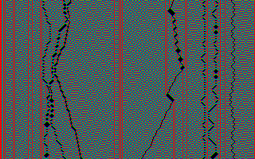
The very simplest cellular automaton rules are one-dimensional rules which have only two states, and where a cell's new state is determined wholly by the L+C+R sum of the cell and its two nearest neighbors. There are only 16 distinct rules of this type. The sixteen rules are gotten by the sixteen different ways of filling four zeroes and ones into the four spaces in the second line of a teensy lookup table:
| L+C+R | 3 | 2 | 1 | 0 |
| NewState | 0 | 0 | 1 | 0 |
|---|
These rules are spoken of as having a "totalistic Wolfram Code" which is the integer gotten by regarding the four bits put into the table as the four bits of a binary integer. The table as illustrated holds the bits 0010, which is of course binary for the number 2. So the illustrated rule has totalistic Wolfram code number 2. (See [Wolfram86] for details.)
The next level of generality is to look at one-dimensional CA rules of only two states whose new state is determined by the LCR contents of the cell and its two neighbors. At this next level of generality, we pay attention to the positions of the bits. There are 256 distinct rules of this type. The 256 rules are gotten by the 256 different ways of filling eight bits into the eight spaces in the second line of a tiny lookup table:
| LCR | 111 | 110 | 101 | 100 | 011 | 010 | 001 | 000 |
| NewState | 0 | 0 | 0 | 1 | 0 | 1 | 1 | 0 |
|---|
These rules have a "Wolfram Code" which is the integer gotten by regarding the eight bits put into the table as an eight bit binary integer. The table illustrated holds the bits 00010110 which is binary for 22. So the rule has Wolfram code number 22.
As it turns out, rule 22 is the same as totalistic rule 2: in each case a cell's new state is 1 if and only if there is exactly one firing bit among L, C, and R. But of course many rules are not equivalent to totalistic rules.
The rule Axons which we show is this same rule #22 (or totalistic rule #2)... with one extra feature. Axons is the reversible version of rule 22.
The trick for making Axons "reversible" is given in detail in my discussion of the Fractal rule below. For now, suffice it to note that, once Axons is running, you can press the letters O and S to see the rule start running "backwards."
I named this rule Axons after the long nerve fibers known as axons. These are up to several feet long, and are coated in a fatty sheath that pinches in every now and then. The Axons rule grows long fibers that are swathed in pinchy sausage casing, just like the cells. The fibers are continuous precisely because this rule is reversible. The existence of a firing cell, or of a hole in the cells, can't be forgotten (unless you bump into a mask cell). So the fibers bounce and tangle, but they never just stop.
In order that some complexity accumulates, a reversible rule needs some input, so I provide for mask cells which periodically pulse cells on. The existence of these periodic masks can of course interfere with perfect reversibility. In the case of Axons, the mask cells get covered over rather soon.
For the sake of elegance, I could have written Axons as a totalistic rule with code 2. "Wow, that's pretty! What's the program?" "Binary 10. The number two. I wonder if I can patent it." Actually I wrote Axons as a general LCR Wolfram rule so that you can try putting different WolfCodes in, recompiling the rule, and running the variants.
If you use WolfCode 178 you get a really neat rule which I call Bamboo.
PROGRAM Axons;
{A one dimensional rule that only looks at one bit of two
neighbors. We run it as WorldType 3, which gets one bit
from each of 8 neighbors. The rule is totalistic, meaning
that it only looks at the sum of its neighborhood. The rule
is also reversible, meaning that it saves its past state and
XORs its calculated new state with the past state. A final
touch to make this rule look good is that I use my extra six
bits of state as a five bit clock and as a mask indicator.
Whenever the clock counts up to 31, I turn on the bits where
mask is on. The start pattern for this consists of two dots
with bit #0 turned on, all the times set to 0, and a pair
of dots with mask set to 1. You can vary the constant
WolfCode to get other pictures.}
USES JCMake;
{$F+} { Required for function argument to genrule. }
FUNCTION JCRule(OldState,LLLL,LLL,LL,L,Self,
R,RR,RRR,RRRR:integer):integer;
{This world type has variables for a cell and its eight
nearest neighbors. This rule actually only uses L,C, and R,
but we write it for the other variables so that this program
can be used as a template for WorldType 2 & 3 programs that
do use eight one-bit neighbors.}
CONST
WolfCode=22;
VAR
Sum,PastSelf,NewSelf,NewState,Time,Mask:integer;
BEGIN
Sum:=(4*L+2*Self+R);
PastSelf:=(OldState SHR 1) AND 1;
NewSelf:=(WolfCode SHR Sum) AND 1;
NewState:=(Self SHL 1) OR (NewSelf XOR PastSelf);
Time:=(OldState SHR 2) AND 31;
Mask:=(OldState SHR 7) AND 1;
IF Time=31 THEN JCRule:=(Mask SHL 7) OR (NewState)
OR Mask
ELSE JCRule:=(Mask SHL 7) OR ((Time+1)SHL 2)
OR (NewState)
END;
BEGIN {Main}
WorldType := 3; {World type: 8 neighbor ring}
PalReq:= 'Mask3'; {Only show low two bits}
PatReq:= 'Axons';
GenRule(JCRule);
END.
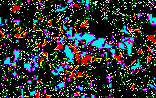
Balloons was discovered by Brian Silverman using his "Phantom Fishtank" program ([Silverman87]). The ruletable technique of describing programs in the RC rulestyle Random was inspired by Silverman's program. Balloons is written so it can be used as a template for making a high-res JC version of any interesting ruletable you might find or create in RC.
Balloons is driven by Silverman's Brain rule. If enough firing Brain
cells are together, they turn on a permanent firing cell. These
permanent firing cells serve as seeds around which more turned-on
cells agglutinate. If a turned on cell is entirely surrounded, it
changes state, so that one soon gets the effect of cells with
membranes. As a final fillip, if there is too much excitement at a
cell's membrane, the membrane bursts and the cell goes over to a
"dead" state which can slowly be nibbled away by the ever active
Brain rule.
In order to make the JC version of Balloons look as much as possible like a zoomed-back version of the RC rule, the program uses a colorpalette RC.JCC which, when used on a VGA monitor, imitates the sixteen textmode colors of RC.
PROGRAM Balloons;
{This realizes one of the RC ruletables. Any other RC
ruletable can be implemented by making a copy of this
program and changing the entries in the table below. }
USES JCmake;
{$F+}
FUNCTION
JCRule(Oldstate,NW,N,NE,W,Self,E,SW,S,SE:integer):integer;
CONST
RuleTable: ARRAY[0..143] OF integer= (
{EightSum}
{0 1 2 3 4 5 6 7 8}
{State}
{0} 0, 0, 15, 0, 0, 0, 5, 0, 0,
{1} 0, 0, 0, 0, 0, 0, 0, 0, 0,
{2} 0, 0, 0, 0, 0, 0, 0, 0, 0,
{3} 0, 0, 0, 0, 0, 0, 0, 0, 0,
{4} 4, 4, 8, 4, 4, 4, 4, 4, 4,
{5} 5, 5, 5, 5, 5, 7, 7, 9, 11,
{6} 2, 2, 2, 2, 2, 2, 2, 2, 2,
{7} 5, 5, 5, 5, 5, 13, 13, 9, 11,
{8} 8, 8, 10, 8, 8, 8, 8, 8, 8,
{9} 2, 2, 2, 2, 2, 9, 13, 9, 11,
{10} 10, 10, 0, 10, 10, 10, 10, 10, 10,
{11} 14, 14, 14, 14, 14, 14, 14, 14, 11,
{12} 12, 12, 4, 12, 12, 12, 12, 12, 12,
{13} 6, 6, 6, 6, 13, 13, 13, 9, 11,
{14} 14, 14, 14, 12, 14, 14, 14, 14, 14,
{15} 2, 2, 2, 2, 2, 2, 2, 2, 2 );
VAR
EightSum,Index:integer;
BEGIN {Function}
OldState:=OldState AND 15;
EightSum:=NW+N+NE+E+SE+S+SW+W;
Index:=9*OldState + EightSum;
JCRule:=RuleTable[Index]
END; {Function}
BEGIN {Main}
{The RC palette reproduces the textmode state colors of RC}
PalReq:='RC';
GenRule(JCRule)
END. {Main}
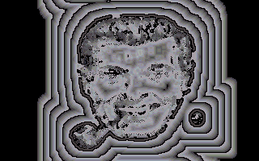
The Bob rule was inspired by the Hodge rule described below; see that rule's description for more information. In the Bob rule, I use the standard default WorldType 0 where I only see one bit of each of my neighbors, so I must replace the averaging "Laplacian spread" component of Hodge by some other trick. I add the the number of nonzero neighbors to a nonzero cell's state. The patterns aren't that close to the patterns of Hodge, but they are interesting, and if you wait awhile you will see some Zhabotinsky action in the form of small paired spirals.
The Bob rule's standard startup is with the Bob pattern, using the
subtle grayscale Bob palette that incorporates touches of yellow and
red. The Bob pattern is a picture of "Bob®", the chief religious
icon of the radical mockery scorn religion called
The Church of the
SubGenius.
"Bob" looks like the typical 1950s cartoon Dad. As the
Bob rule dissolves and reforms "Bob"'s visage, he goes through a
remarkable series of image transformations, demonstrating the terrific
power of cellular automata for creative image processing.
It's also fun, by the way, to feed the "Bob" pattern to a straight averaging rule by loading *Laplace. Laplace turns "Bob" into a urine-stained tabloid newspaper photo of a "face on Mars."
If you start the Bob rule from a random screen, it will take three or four hundred generations until you start seeing circular centers of activity, like bacterial cultures in a petri dish. After a thousand generations these centers have taken over. If you then cut out a black hole with the screen editor, the plaguey culture will flicker around the hole like flames. The flame illusion is enhanced if you use the Default colorpalette.
PROGRAM Bob;
{This is modeled on the Hodgepodge rule of Gerhardt and
Schuster, and can produce mild Zhabotinsky reactions. The
start pattern used is the Shroud of Turing visage of "Bob".
"Bob" is the High Epopt of the Church of the SubGenius.
For more information about "Bob" and the Church, send $1
and a long stamped self-addressed envelope to:
The SubGenius Foundation
Box 140306
Dallas, TX 75214
The image of "Bob" is a registered trademark of the Church
of the Subgenius and is used by special arrangement with
Douglas St. Claire Smith, a.k.a. Ivan Stang. Inquiries
about further usage of "Bob"'s image should be directed to
Mr. Smith c/o The SubGenius Foundation.}
USES JCmake;
{$F+} { Required for function argument to genrule. }
FUNCTION JCRule(Oldstate,NW,N,NE,W,Self,
E,SW,S,SE:integer):integer;
{The odd states are thought of as infected states. A cell
in state zero enters an infected state if it has any
infected neighbors. An infected cell becomes more infected
until its state exceeds 129, at which time it drops back to
0.}
VAR
EightSum,Sickness,NewState:integer;
BEGIN {Function}
EightSum:=NW+N+NE+E+SE+S+SW+W;
IF OldState=0
THEN IF EightSum=0 THEN NewState:=0
ELSE NewState:=EightSum OR 1
ELSE
BEGIN
Sickness:=OldState SHR 1;
IF Sickness=64
THEN NewState:=0
ELSE
BEGIN
Sickness:=Sickness+EightSum+3;
IF Sickness>64 THEN Sickness:=64;
NewState:=(Sickness SHL 1) OR 1
END
END;
JCRule:=NewState
END; {Function}
BEGIN {Main}
PatReq:='Bob';
PalReq:='Bob';
GenRule(JCRule)
END. {Main}
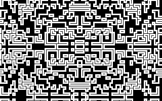
Border is a rule which uses two bits. One of the bits is a background "cycle" bit, and the other bit is a visible on/off firing/dead bit. The Cycle bit toggles Border between two modes: Flood mode and Hollow mode. In Flood mode, Border turns on any cell which is touching a firing cell. In Hollow mode, Border turns off any cell which is at the center of an all-firing nine-cell neighborhood.The effect of Border is that lines keep getting thick, splitting into two, having the new pieces get thick and split to make four, and so on. Many of the Border patterns are reminiscent of the mathematical objects called "Cantor sets."
Border starts from the pattern Square, but it could equally well start
from a single dot. The rule begins to get exciting when the expanding
square wave from the center wraps around the screen edges and begins
to interfere with itself. First the pattern wraps top and bottom, and
then it wraps right and left; unlike CAM-6's
256×256 screen, our
screen is a rectangle.
A good way to watch the interference patterns evolve is to use the arrow keys to pan the screen until the interference region is in screen center. This means that one fourth of the original square pattern is at each screen corner.
It is interesting to note that no matter how intricate the pattern gets, it is still the deterministic outcome of the simple Border rule starting on a single Square or Dot.
The Border.PAS file looks like this:
PROGRAM Border;
{This rule alternates between two cycles: In cycle 0, every
cell touching a firing cell is turned on. In cycle 1, any
cell which is the center of a block of 9 firing cells is
turned off. Bit #0 is the firing bit and bit #7 is the
cycle bit.}
USES JCmake;
{$F+}
FUNCTION JCRule(Oldstate,NW,N,NE,W,Self,E,SW,S,SE:
integer):integer;
VAR
NineSum,Cycle,NewCycle,NewSelf:integer;
BEGIN
NineSum:=NW+N+NE+W+Self+E+SW+S+SE;
Cycle:=OldState SHR 7; {Shift down the high bit}
NewCycle:=Cycle XOR 1; {Change 0 to 1 and 1 to 0}
CASE Cycle OF
0: IF NineSum>0 THEN NewSelf:=1 ELSE
NewSelf:=0; {Flood}
1: IF NineSum=9 THEN NewSelf:=0 ELSE
NewSelf:=Self; {Hollow}
END;
JCRule:=(NewCycle SHL 7) OR NewSelf;
END;
BEGIN
PalReq:='Mask1'; {This colorpalette only looks at bit #0}
PatReq:='Square';
GenRule(JCRule);
END.
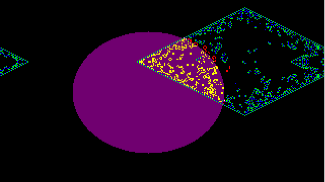
The JC BraiLife rule after 213 generations. A hauler is about to hit a butterfly just above and to the right of the center of the diamond shape.
When I first started hacking cellular automata on the CAM-6 in 1987, I couldn't quite see how to think of a completely new rule. So I decided a good way to start might be to try combining some of the old rules, particularly the rules Life and Brain.
Life is very interesting, but it tends to die out. Brain, on the other hand, is extremely hard to kill off; if anything, Brain is too persistent. So I thought I might try running Life and Brain in parallel, using Brain to stimulate Life, and using Life to dampen Brain.
At first I had every firing Brain cell turn on a Life cell, and had every firing Life cell turn off a Brain cell, but, run fullscreen, this reaction quickly wipes Brain out. You can see the fullscreen reaction by loading BraiLife, clearing all the screens, setting plane 4 to 1, and randomizing plane 2. The keystrokes are as follows. Note that you do not press Enter after answering the "Initialize planes" prompts called up by pressing I:
l
brailife
i
a
0
i
4
1
i
2
r
F1
Enter
Instead of letting Brain and Life interact across the whole screen, I set up the BraiLife start pattern as a disk-shaped mask in plane #4 and two firing Brain bits in plane #2. This is what you see if you load BraiLife and let it run unaltered.
Note how Brain grows an oriental-carpet-patterned diamond from a start of two adjacent firing blocks. Where this diamond sweeps across the limb of the central disk, Life cells are turned on within the disk. Some of the life manages to boil out into the black region outside the disk.
Graphically, the development of BraiLife makes me think of a UFO that hovers near the atmosphere of a fallow planet (these are the starting Brain dots). The UFO sets off an energy blast, and the shock wave of the blast sweeps across the planet like the EMP-spike from an H-bomb. But instead of being destructive, the UFO energy turns on living cells in the planetary sea. Some of these cells manage to crawl out and flap around in the planetary atmosphere. The UFO energy pulse breaks into spacecruising creatures who are usually poisoned if they try to return to the planet they seeded.
All this from a disk, two dots, and a few lines of code!
The way in which BraiLife runs two parallel rules is to cycle between doing one and the other. Only the bit in plane #0 is visible to neighbors, so each cell alternates between showing its firing Life bit in #0 and showing its firing Brain bit in #0.
Here is BraiLife.PAS:
PROGRAM BraiLife;
{This rule runs Life and Brain in parallel and lets them
interact only within a certain masked region. In this
region, firing Brain cells turn on Life cells, and firing
Life cells keep Brain cells from turning on.}
USES JCmake;
{$F+} { Required for function argument to genrule. }
FUNCTION JCRule(Oldstate,NW,N,NE,W,Self,E,SW,S,SE:
integer):integer;
{We use the eight bits of state as follows:
Bit #0 is used to show either the Brain
or the Life bit to neighbors;
Bit #1 is the Life bit,
Bit #2 is the firing Brain bit,
Bit #3 is the refractory Brain bit,
Bit #4 is the mask bit,and
Bit #7 is the cycle bit.}
VAR
L,NewL,B,NewB,BR,NewBR,Mask,Cycle,NewCycle,
EightSum: integer;
BEGIN
Cycle:=(OldState SHR 7) AND 1; { We AND with 1
because we only}
Mask:= (OldState SHR 4) AND 1; { want to extract one
bit of info.}
BR:=(OldState SHR 3) AND 1;
B:=(OldState SHR 2) AND 1;
L:=(OldState SHR 1) AND 1;
EightSum:=NW+N+NE+E+SE+S+SW+W;
IF Cycle=0 THEN {This is the update Life cycle}
BEGIN
{The Life rule}
IF (EightSum=3)OR((EightSum=2)AND(L=1))
THEN NewL:=1 ELSE NewL:=0;
{Turned on by firing Brain cells within region of mask}
IF (Mask=1)AND(B=1) THEN NewL:=1;
NewCycle:=1;
JCRule:=(NewCycle SHL 7) OR (Mask SHL 4) OR
(BR SHL 3) OR
(B SHL 2) OR (NewL SHL 1) OR B
END;
IF Cycle=1 THEN {This is the update Brain cycle}
BEGIN
{The Brain rule}
IF ((BR=0)AND(B=0))AND(EightSum=2)THEN
NewB:=1 ELSE NewB:=0;
{Turned off by firing Life cells within region of mask}
IF (L=1)AND(Mask=1) THEN NewB:=0;
NewBR:=B;
NewCycle:=0;
JCRule:=(NewCycle SHL 7) OR (Mask SHL 4) OR
(NewBR SHL 3) OR
(NewB SHL 2) OR (L SHL 1) OR L
END
END;
BEGIN {Main program}
{The BraiLife.JCC colorpalette looks at bits 4,3,2, &
1. I got my colorpalette by disabling planes 0,5,6,7
of the Default.JCC and saving it as BraiLife.JCC}
PalReq:='BraiLife';
{The starting BraiLife pattern has all bit 7s set to 0
(for synchronized cycles), has two adjacent cells of
plane #2 turned on to start Brain, and has a big disk
mask in plane #4.}
PatReq:='BraiLife';
GenRule(JCRule);
END.
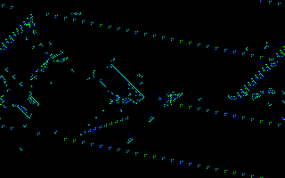
The one and only. There's lots of material on Brain in the Rule Definition chapter, explaining how to program it in Pascal, C, and BASIC.
To see the Butterfly Gun, get the pattern BFLYGUN.JCP.
My Butterfly Gun starts out with an extra east-moving hauler whose
purpose is to knock out a west-moving hauler which the Gun spits out
before getting into its standard operation. I once saw a much smaller
butterfly gun while playing with RC; I think it only used three
outriggers. If you find a small butterfly gun, let me know and we'll
put it in the next edition of the manual, if there is one.
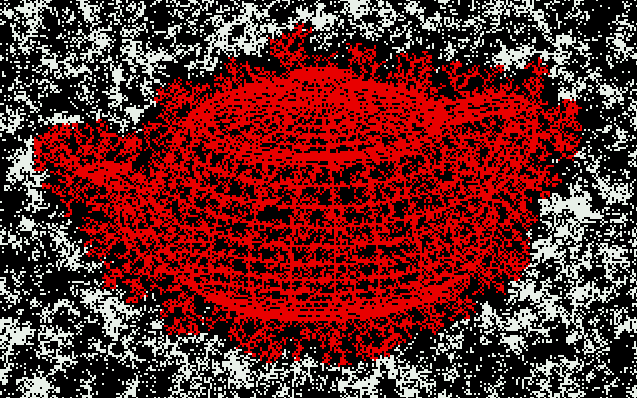
The JC Dendrite rule. The white "gas" particles "freeze" to the red teapot shape, forming dendrites.
These rules both consist of a drifting "gas" pattern and a "frozen" seed pattern. The gas alternates between cycles of a) diffusing, and b) freezing if it is touching a frozen cell. The freezing process produces branching little dendrites of frozen cells. This phenomenon is a rough model for the physico-chemical process by which so-called accretion fractals are formed.
Dendrite shows a random gas and a frozen teapot; and DenTim shows a Tim-shaped gas and a frozen Autodesk logo.
The programs for the rules are the same except that Dendrite requests an random initial gas and DenTim requests a Tim-shaped initial gas. The programs store the gas bit in plane #7 and the frozen-cell bits in plane #6. The cycle bit is in plane #5. If the cycle bit is 0, we update the gas diffusion; and if the cycle bit is 1, we update the freezing. The visible bit is always the bit in plane #0; as we change cycles we alternate between showing the gas bit or the freeze bit. Depending whether we are updating Diffuse or Freeze, bit #0 is showing the gas bit or the freeze bit. The rule starts up in cycle 0, so we start it up with some visible gas bits in plane #0. The Dendrite.JCC colorpalette we use simply ignores all bits except #6 and #7.
The two rules use a cheap, imperfect method of mimicking gas diffusion. The trick is that at each gas update, each cell copies the gas value of one of its eight neighbors, the exact neighbor to be chosen at random. This is imperfect because it may happen that an individual firing gas particle may be copied by two or more of its neighbors (in which case one particle is splitting into several) or, just as bad, it may happen that an individual firing gas particle is copied by none of its neighbors (in which case a particle disappears). For a really good gas model, we would expect to have conservation of particles.
A gas with particle conservation can in fact be constructed (see the rules Sublime, PerfumeX, and PerfumeT), and we can indeed use these gases to grow dendrites as well (see Soot).
Why do the frozen cells of the Den... rules form those branching dendrites? The reason is so simple as nearly to evade comprehension: it is much easier for a randomly jostling gas particle to bump into one of the dendrite's tips or "capes" than it is for the gas particle to find its way up into one of the indentations or "estuaries."
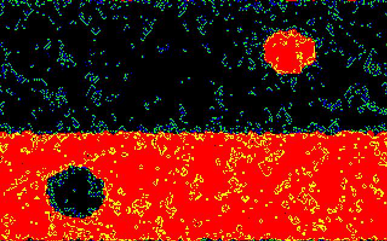
This rule is a cross between Life and Brain. The basic idea is that the cells are divided between dark "sea" cells and light "land" cells. We run Brain in the sea, and on land we run not Life but AntiLife. All the land cells are normally firing cells, and the presence of an active AntiLife cell is signaled by having a land cell which is not firing. Full details on EcoLiBra are in §
The name EcoLiBra suggests 1) an ecology of Life and Brain, 2) a balanced situation (equilibrium), and 3) the human intestinal bacteria Escherichia coli, known as E. coli for short. The third connection is perhaps a bit unsavory, but remember that E. coli cells are in fact the favorite "guinea pigs" for present day genesplicing experiments. As one of the goals of CelLab is to promote the development of artificial life, the designer gene connection is entirely appropriate. I've given EcoLiBra a nice, symmetric start pattern, but it also does fine if you press R to randomize the screen. You can make a randomized screen a little more interesting by using the screen editor to drill a big black hole in the center. This can be done by using the following keystrokes
l
EcoLiBra Enter
Enter
r
e
0 (the numeral zero)
x
Seven presses of the Right Arrow key
Seven presses of the Up Arrow key
d
e
Enter
Three presses of the Left Arrow key
Three presses of the Down Arrow key
The last arrow key presses are simply to pan the screen so that the hole is in the center. The hole will grow.
Here is the Pascal code for EcoLiBra.PAS:
PROGRAM EcoLiBra;
{This rule runs Brain in the sea and AntiLife on land. Six
or seven firing Brain cells turn a sea cell into land.
Seven "antifiring" Antilife cells turn a land cell into
sea.}
USES JCmake;
{$F+} { Required for function argument to genrule. }
FUNCTION JCRule(Oldstate,NW,N,NE,W,Self,E,SW,S,SE:
integer):integer;
{Here rather than thinking of bits, we think of state numbers.
State 0 is dead sea
State 1 is firing brain in sea
State 2 is refractory brain in sea
State 3 is dead land
State 4 is firing life on land}
VAR
EightSum,NewState:integer;
BEGIN {Function}
EightSum:=NW+N+NE+E+SE+S+SW+W;
IF odd(OldState) THEN NewState:=3 ELSE NewState:=0;
IF OldState=0 THEN
CASE EightSum OF
2: NewState:=1;
6,7: NewState:=3;
ELSE NewState:=0;
END;
IF OldState=1 THEN NewState:=2;
IF OldState=2 THEN NewState:=0;
IF OldState=3 THEN
CASE EightSum OF
5: NewState:=4;
1: NewState:=0;
ELSE NewState:=3;
END;
IF OldState=4 THEN
CASE EightSum OF
5,6: NewState:=4;
ELSE NewState:=3
END;
JCRule:=NewState
END; {Function}
BEGIN {Main}
PalReq:='Default';
PatReq:='EcoLiBra';
GenRule(JCRule)
END. {Main}
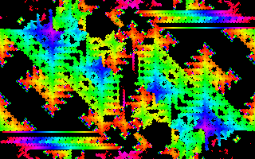
Faders is my pride and joy. I found Faders by playing with the rule editor in RC, while thinking about the similarities and differences between Life and Brain. What Life and Brain have in common is the threshold property: in each rule a dead (state 0) cell requires a certain number of firing neighbors to get turned on. Life requires exactly 3 firing neighbors, Brain requires exactly 2. The singular thing about Life is persistence: a firing Life cell keeps firing if it has either 2 or 3 firing neighbors, (otherwise it dies and goes back to state 0). The singular thing about Brain is memory: a firing Brain cell goes to a refractory state which "remembers" that it used to be firing, and only later does the cell transform to state 0, which can be restimulated to fire.
In Faders I perform a "genetic" cross between Life and Brain by
describing a rule which has threshold, persistence, and memory. A dead
Faders cell requires exactly 2 firing neighbors to get turned on. A
firing Faders cell keeps firing if it has exactly 2 firing neighbors.
And when a Faders cell leaves the firing state it goes into a sequence
of refractory states. Instead of having just 1 refractory state (like
Brain), the JC Faders has 127 refractory states.
Note that the version of Faders implemented in RC has only 7 refractory states. Faders with any desired number n of refractory states can be seen by entering the name N(n2222) when JC asks for the name of a rule to load. This works because Faders is an "NLUKY rule" as described in the Theory chapter. JC is designed to automatically generate and load NLUKY ruletables. For any positive integers n,l,u,k,y with l,u,k,y less than 10, entering N( nluky) with the integer names run together will cause JC to show the appropriate "NLUKY rule".
JC faders looks really great in VGA, but is also pretty interesting in CGA. The white cells are the firing cells. When Faders has a clear screen, it grows rapidly, leaving slowly dissolving trails behind. What keeps it coming back is that it can lay down "eggs" or "seeds" of activity. These eggs take the form of three adjacent firing cells configured into a small right-angle L-shape. You might call them fader eggs. Each cell in one of these threecell fader eggs has exactly two firing neighbors, so they persist until the refractory color veils dissolve and they can start turning on dead neighbors.
Faders looks good if you start it on our Billbord ad pattern. You can start it on any other pattern; even on a random screen. If you do start Faders on a random screen, it will look like nothing is happening for awhile. But just wait. When you randomize, you fill most of the screen with refractory states, but usually there will be some of those angle-iron eggs lurking in the haze, and as soon as it clears away they'll start spreading order.
Actually one of the best ways to start Faders is from a simple three block L or angle-iron of state 1 blocks. This pattern is stored as Faderegg.JCP. For a little practice with the editor, you can create this pattern with the screen editor and run Faders on it by using the following keystrokes.
l
faders Enter
F1
i a 0
e
1
Ins
End
UpArrow
Ins
LeftArrow
Ins
e
Enter
The pattern seems to run endlessly and evolves in interestingly different ways according to whether you have JC in the plane nowrap mode or in the torus wrap mode. If you want to run it in nowrap mode, press F3 before starting. The edges of the refractory faders patterns have an interesting fractal quality. The rule keeps laying down fader eggs that reseed the center. If you ran Faders from a single three-cell egg in an endless plane, I wonder how soon the pattern within some bounded N×N central region would repeat. For that matter, I wonder how soon it repeats on our screen? If you find out, please write.
We have Faders set to run with a special Faders colorpalette, but other colorpalettes can give good results. The colorpalette called AutoCAD.JCC looks particularly good.
Here is a program for Faders. The program is actually designed to generate the lookup table for any NLUKY rule, according to how the CONST variables are set.
PROGRAM Faders;
{NLUKY 127 2 2 2 2}
USES JCmake;
{$F+} { Required for function argument to genrule. }
FUNCTION JCRule(Oldstate,NW,N,NE,W,
Self,E,SW,S,SE:integer):integer;
CONST
RN=127; L=2; U=2; K=2; Y=2;
VAR
EightSum,NewState:integer;
BEGIN {Function}
EightSum:=NW+N+NE+E+SE+S+SW+W;
NewState:=0;
IF (OldState=0) AND (L<=EightSum) AND
(EightSum<=U) THEN NewState:=1;
IF (OldState=1) THEN
IF (K<=EightSum) AND (EightSum<=Y) THEN
NewState:=1
ELSE
NewState:=2;
IF NOT(odd(OldState)) AND
(0<OldState)AND(OldState<2*RN) THEN
NewState:=OldState+2;
JCRule:=NewState
END; {Function}
BEGIN {Main}
{The Faders colorpalette shows state 0 as black, state 1 as
white, and steps the refractory states through the
spectrum.}
PalReq:='Faders';
GenRule(JCRule)
END. {Main}
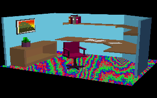
Flick is named after "flickercladding," the CA skin which covers the robots in my books Software and Wetware. In Flick, we see an AutoShade®d office whose rug is made of flickercladding that runs the JC rule TimeTun. You can tell which parts of the picture are "rug" because these cells have their bit #7 set to 1. This really only looks good on a VGA.
PROGRAM Flick;
{ Flickercladding Interior Decoration
Conceived by Rudy Rucker
Drawn by Gary Wells
Modeled with AutoCAD
Rendered by AutoShade
Perpetrated by Kelvin R. Throop.
In this rule, we only change the cells whose high bits
are on. These cells are updated according to the
TimeTun rule.}
USES JCMake; {$F+}
FUNCTION JCRule(OldState,NW,N,NE,W,Self
E,SW,S,SE:integer):integer;
VAR
Interest, OldSelf,NewSelf,FiveSum: integer;
Fixed: Boolean;
BEGIN
{Cell is Fixed if high bit is off}
Fixed := ((OldState SHR7)=0);
If Fixed THEN JCRule:=OldState ELSE
BEGIN
OldSelf:=(OldState SHR 1) AND 1;
FiveSum:=N+E+Self+S+W;
IF (FiveSum=0) OR (FiveSum=5) THEN
Interest:=0 ELSE Interest :=1;
NewSelf:=Interest XOR OldSelf;
JCRule:=128 OR (Self SHL 1) OR NewSelf;
END
END;
BEGIN {Main}
PalReq:='OpenPlan';
PatReq:='OpenPlan';
GenRule(JCRule);
END.
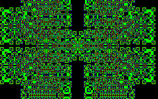
Fractal is a simple program which produces nice fractal patterns from a square. Each cell holds two bits: the present firing bit in plane #0 and a memory bit in plane #1. The rule says to look at five bits: the firing bits of your four diagonal neighbors and your own memory bit. If an odd number of these five bits are on, you turn on, and otherwise you turn off. Before writing down your new firing bit value, you store your present firing bit value in your memory bit.Fractal is a "reversible" rule which means that if at any time you press O and then S to swap the contents of plane #0 with plane #1, Fractal will run backwards, returning to its start pattern and proceeding onward into negative time.
Fractal is reversible because the rule for Fractal can be written this
way:
where Parity is 1 if NE+NW+SE+SW is odd and 0 if
NE+NW+SE+SW is even. The key thing about the equation
just given is that, using the rules of algebra, we are
allowed to swap NewSelf and OldSelf and get the equally
valid equation:

This means that the rule for passing from new to old is the same as the rule for passing from old to new. Let's see why this means that pressing O and S makes Fractal run backwards.
If it is now time T, and plane #1 holds my screen at time T-1, then applying Fractal will: i) compute the screen for time T+1 and put this in plane #0, ii) meanwhile moving the old time T info from plane #0 into plane #1, and then iii) showing planes #0 and #1 on the screen.
Suppose that I now press O and S and swap the info in planes #0 and #1. Now the time T info is in plane #0 and the time T+1 info is in plane #1. The fractal rule computes the parity of each time T cell's neighborhood and subtracts off plane #1 value. But because we pressed O and S, the plane #1 value is the cell value for time T+1. Therefore the equation
applies, and the value we compute is indeed OldSelf, the value at time T-1! So now time T-1 values are put in plane #0 and time T values are saved in plane #1. The next application of the Fractal rule calculates the values for time T-2, and so on.
PROGRAM Fractal;
{Based on Me-Neither rule, [Margolus&Toffoli87],p.132}
USES JCmake;
{$F+} { Required for function argument to genrule. }
FUNCTION JCRule(Oldstate,NW,N,NE,W,Self,E,
SW,S,SE:integer):integer;
VAR
Bit1,FourSum,Parity, NewSelf : integer;
BEGIN {Function}
Bit1:=(OldState SHR 1) AND 1;
{Get the memory bit from plane #1}
FourSum:=NE+NW+SE+SW;
{Sum up the low bits of your 4 present neighbors}
IF odd(FourSum) THEN Parity:=1 ELSE
Parity:=0; {Set Parity from FourSum}
NewSelf:= Parity XOR Bit1;
{A XOR Bit1 is same as (A-Bit1) MOD 2}
{Store present self in plane #1}
JCRule:=(Self SHL 1) OR NewSelf;
END; {Function}
BEGIN {Main}
PatReq:='Square';
GenRule(JCRule)
END. {Main}
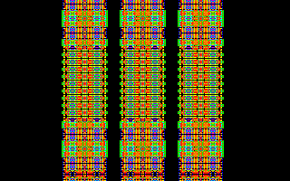
Edward Fredkin invented the "parity rule" as a very simple example of "self-reproduction" in cellular automata. In the parity rule, a cell takes the sum of its neighbors and goes to 1 if the sum is odd, or to 0 if the sum is even. Thus a cell takes on the "parity" (oddness) of its neighborhood. If the shape of the neighborhood you are using includes k cells, then when you feed any small plane #0 starting pattern to the parity rule, you will soon have k copies of the pattern, and then you'll get k2 copies, and so on.To make this rule a little more dramatic to look at, we use the extra seven planes as memory planes, so that plane #1 remembers plane #0's last pattern, plane #2 remembers the pattern before that, and so on.
It's fun to use the editor to draw some simple pattern in plane #0 and watch what Fredmem does with it.
We've written the rule for a nine-cell neighborhood. It works equally
well for a five-cell (N+E+W+S+Self) neighborhood, or even for a
three-cell (say N+Self+E) neighborhood. The threecell version with
only one bit of echo looks neat if you start with a square in one of
the screen's corners; you get things that look like hypercubes.
PROGRAM FredMem;
{The Fredkin parity rule with the seven extra bits used as
memory}
USES JCmake;
{$F+} { Required for function argument to genrule. }
FUNCTION JCRule(Oldstate,NW,N,NE,W,Self,
E,SW,S,SE:integer):integer;
VAR
NineSum,NewSelf,NewState:integer;
BEGIN {Function}
NineSum:=NW+N+NE+E+SE+S+SW+W+Self;
IF odd(NineSum) THEN NewSelf:=1 ELSE NewSelf:=0;
NewState:=(OldState SHL 1); {Shift memory bits to left}
NewState:=NewState OR NewSelf;
JCRule:=NewState
END; {Function}
BEGIN {Main}
PatReq:='Square';
GenRule(JCRule)
END. {Main}
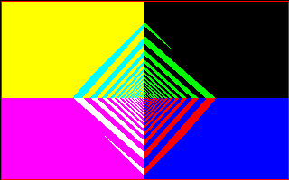
While working on CelLab, I've enjoyed a number of conversations with William Gosper, who lives not too far away. Gosper achieved CA immortality by discovering the Life glidergun in 1971. He still takes a sporadically active interest in CAs, and he urged me to realize a rule which he thought of. This rule is Gosper's Gyre.
The idea behind Gyre is that we load an initial pattern into
the plane so that cells can tell which of the four quadrants they are
in. In each quadrant, the cells pass their plane #0 bits around
according to a scheme which produces a circling motion around the
origin. The interest of the pattern arises because if I start out with
a block of firing cells in one quadrant, the block will "refract" as
it passes through the quadrant boundaries. Cells which are closer to
the origin get to the boundary before the more distant cells do, and
they pull increasingly ahead, drawing the original start pattern into
a spiral or "gyre."
PROGRAM Gyre;
{Rule suggested by William Gosper. We lay down a mask
marking the cartesian plane's four quadrants (Qs for short)
by the numbers 0-3 in the arrangement 2 0
3 1
And we tell Q0 cells to copy SE, Q1 copy SW, Q2 copy NE,
Q3 copy NW. A block of cell stuff will refract.}
USES JCmake;
{$F+} { Required for function argument to genrule. }
FUNCTION JCRule(OldState,NW,N,NE,W,Self,
E,SW,S,SE:integer):integer;
{Bit #3 is the Barrier bit (for screen edge)
Bits #2 and #1 are the Quadrant bits (00,01,10,or 11)
Bit #0 is the firing "matter" bit.}
VAR
Barrier,Quadrant,NewSelf:integer;
BEGIN {Function}
Barrier:=(OldState SHR 3) AND 1;
Quadrant:=(OldState SHR 1) AND 3;
{Barrier cells stay barrier cells}
IF Barrier=1 THEN JCRule:=8 ELSE
BEGIN
CASE Quadrant OF
0: NewSelf:=SE;
1: NewSelf:=SW;
2: NewSelf:=NE;
3: NewSelf:=NW;
END;
JCRule:=(Quadrant SHL 1) OR NewSelf;
END;
END; {Function}
BEGIN {Main}
WorldType:=0; {No wrap}
PalReq:='Gyre'; {Colorful}
{The pattern has Qs marked in bits 1,2 and a rectangle
of food cells in Q0. Pattern also has a frame of
Barrier cells around the screen edge.}
PatReq:='Gyre';
GenRule(JCRule)
END. {Main}
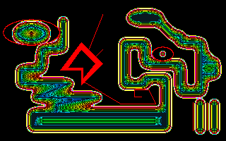
The JC Heat rules and the JC Rug rules are all variations on the RC Rug rule where a cell's new state is based on the average of the states around it. In both Heat and Heatwave, we use the toroidal WorldType 10, whose inner loop returns five bits of the cell's old state as well as the eleven bit sum of the cell's eight eight-bit neighbors. And in both rules we divide this full eightsum by eight. The difference between Heat and HeatWave is that HeatWave adds two to the average.The special feature of Heat and Heatwave is that some of the cells are kept at fixed values. In particular, if a cell's low bit is on, the cell is not updated, the cell is simply kept at a fixed value. Specifying the cell's fixed value is a bit tricky because WorldType 10 only gives you five bits of the cell's state. As my purpose in writing Heat was to simulate heatflow between two objects of different temperatures, what I do is to suppose that the odd states with low five bits 1-15 are fixed at the low values 1 to 15; and that the odd states with low five bits 17-31 are fixed at the high values 128+17 to 128+31. Relative to a continuous modular ring of 256 eight-bit values, 128 is as far as you can get from zero.
The Heat pattern includes a large assemblage drawn in state 128+31, as
well as a leaning block in state 1. The "hot" assemblage sends out
waves of high state, but the "cool" block seems to do nothing. In
order to see both blocks in action, energize the background by putting
in some random mid-temperature gas. These keystrokes will work:
l
heat Enter
p
heat Enter
i 6 r
Enter
If anything, Heat works too well, converging very quickly to a boring equilibrium state. In HeatWave we keep cycling the colors of the non-fixed cells. Ultimately this leads to turbulent chaos in the nonfixed regions. HeatWave looks really gorgeous when run with the pattern StarTrek.JCP, which is an AutoCAD line drawing of the starship Enterprise.
Pascal code defining the Heat rule is presented in the Rule Definition chapter.
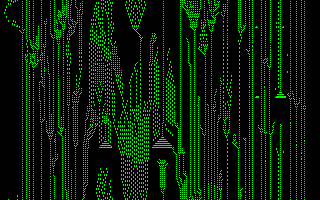
This is a five-neighbor two-state two-dimensional cellular automaton found at random by Margolus and Toffoli. It organizes a nice sliding flow on a random screen, and it disassembles solid starting patterns in an interesting way.
PROGRAM HGlass;
{A rule from Margolus and Toffoli.}
USES JCmake;
{$F+} { Required for function argument to genrule. }
FUNCTION JCRule(Oldstate,NW,N,NE,W,Self,
E,SW,S,SE:integer):integer;
VAR
EWSNC:integer;
BEGIN {Function}
EWSNC:=16*E+8*W+4*S+2*N+Self;
JCRule:=0;
CASE EWSNC OF
1,2,3,11,21,25,29,30,31: JCRule:=1;
END;
END; {Function}
BEGIN {Main}
GenRule(JCRule)
END. {Main}
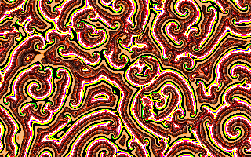
Hodge is inspired by a cellular automaton rule called "the Hodgepodge machine," (see [DewdneyColumn88a]). The Hodgepodge rule was invented by Martin Gerhardt and Heike Schuster of the University of Bielefeld in West Germany. For whatever reason, Gerhardt and Schuster chose to describe their rule in terms of the spread of a disease. A cell in state 0 is thought of as "healthy" and a cell in state 128 is thought of as truly "ill". Cells in states 1-127 are thought of as being "sick" in varying degrees. The Hodgepodge rule eventually begins producing spirals like the Zhabotinsky reaction.
The Hodgepodge rule is formulated in terms of two constants g and n:
These three conditions are 1) ragged start, 2) Laplacian spread, 3) synchronizing cutoff.
Below is the Pascal code for Hodge. The JC WorldType 10 is tailormade for averaging neighbors. In this WorldType we are only allowed to see five bits of EveryCell's OldState, so the cutoff value n has to be the largest number expressible in five bits: 31. An increment g value of 5 seems to work best here.
Hodge is a lovely rule which converges very rapidly. It looks nice with the colorpalettes Default, AutoCAD, and Ranch. Particularly with AutoCAD color, the patterns look extremely organic, suggesting successive microtomed cross-sections of a human brain.
Suppose you push the microtome concept and begin thinking of Hodge as generating a three dimensional stack of planes--just as a one dimensional rule generates a two dimensional spacetime sheet of stacked lines. When you look at Hodge (or at other Zhabotinsky reactions) you are seeing very striking three dimensional structures; things like paired vortex sheets in the surface of a river below a dam, the scroll pair stretching all the way down to the river bottom...to a fortuitous inhomogeneity in Hodge's random start.
Another thought: In three dimensions, a Zhabotinsky reaction would be like two paired nautilus shells, facing each other with their lips blending. The successive layers of such a growing pattern would build up a shape very like...a fetus!
Hodge is also interesting if you give it a bilaterally symmetric start; this leads to patterns that remind me of fanciful chinese lions with popeyes and twinscroll nostrils. A good bilaterally symmetric start can be gotten by loading the Rug.JCP pattern in nowrap mode and scrolling part of the pattern off the top of the screen. This leaves the left/right symmetry but breaks the up/down symmetry. This must be done before loading Hodge, because WorldType 10 rules like Hodge do not admit a nowrap mode. Once the pattern is set, feed it to Hodge. As the pattern settles in, try fooling with different colorpalette selections. Eventually you will get a living pattern so neat you want to save it. This is a good time to use the "save experiment" control: just press Ctrl-F3 and then enter the name you want to give it, say "lion."
ca
F3
p
rug Enter
Enter
UpArrow UpArrow UpArrow UpArrow
l
hodge Enter
Enter
...(time passes and you try colorpalettes)...
Ctrl-F3
lion
PROGRAM Hodge;
USES JCmake;
{$F+} { Required for function argument to genrule. }
FUNCTION JCRule(FiveBits,Sum,
a,b,c,d,e,f,g,h:integer):integer;
VAR
Temp:integer;
BEGIN {Function}
IF (FiveBits=0) THEN
IF Sum<5 THEN Temp:=0 ELSE
IF Sum<100 THEN Temp:=2 ELSE
Temp:=3;
IF (FiveBits>0) AND (FiveBits<31) THEN
Temp:=((Sum SHR 3)+5)AND 255;
IF Temp>=31 THEN Temp:=31;
IF FiveBits=31 THEN Temp:=0;
JCRule:=Temp
END; {Function}
BEGIN {Main}
WorldType:=10;
GenRule(JCRule)
END. {Main}
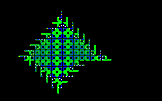
This is the JC version of the standalone Langton rule. The inspiration of the Langton rule is discussed in the History chapter; the own code evaluator page describes how the JC version of Langton was written.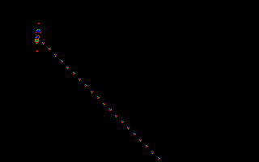
The version of Life we show here echoes plane #0 into plane #1. This means that cells will be differentially shaded according to whether they have the low two bits:
| 00 | Was off and is off | Blank |
| 01 | Was off and is now on | Newborn |
| 10 | Was on and is now off | Newly dead |
| 11 | Was on and is now on | Established |
This particular shading enables the eye to easily pick out the regions
of greatest activity. If you would prefer to see vanilla, untinted
Life, load the colorpalette Mask1, which colors all odd
states white and all even states black.
Two Life patterns interesting to load are RPent and GlidrGun. See the Theory chapter for much info about Life.
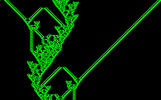
It is possible to model and carry out any possible computation as a two dimensional cellular automaton. It is known that Life, in particular, can be used to build a "universal computer." Streams of gliders act like signals and other kinds of patterns act as memory blocks and as logic gates.
Can one dimensional cellular automata carry out universal computation?
Yes, if we allow the cells to have many (about a hundred) different
states. But can it be done with only two states, as in Life?
Parks is a totalistic one-dimensional, two-state, six-neighbor CA rule
that is thought to be promising. As reported in [Dewdney88], p. 143,
James K. Park found a bidirectional "glider" gun for this rule
which shoots moving patterns out to the right and to the left.
PROGRAM Parks;
{A totalistic one dimensional rule that sums one bit of
three neighbors on either side plus a bit of self. Sum
ranges from 0 to 7.}
USES JCMake;
{$F+} { Required for function argument to genrule. }
FUNCTION JCRule(OldState,LLLL,LLL,LL,L,Self,
R,RR,RRR,RRRR:integer):integer;
CONST
WolfCode=88; {Codes 0 through 127 are meaningful here}
VAR
Sum,PastSelf,NewSelf,NewState,Time,Mask:integer;
BEGIN
Sum:=(LLL+LL+L+Self+R+RR+RRR);
JCRule:=(WolfCode SHR Sum) AND 1;
END;
BEGIN {Main}
WorldType := 3; { World type: 8 neighbor ring }
PalReq:= 'Mask1';
{The Parks pattern is 1111111111011.
Pattern spews gliders left & right.}
PatReq:= 'Parks';
GenRule(JCRule);
END.
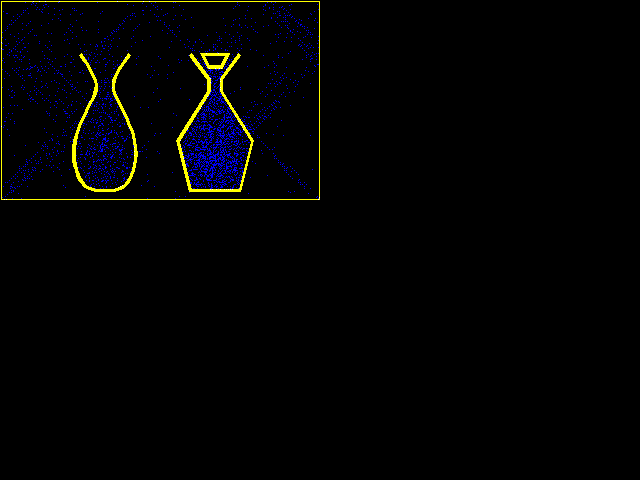
These two rules show "lattice gasses." A lattice gas is a simulation of a physical gas that represents gas particles by zeroes and ones in a lattice or grid. JC is pretty good at showing lattice gas, though other ways of simulating lattice gasses are possible.Our JC demos show four kinds of lattice gas in all. There is the "naive diffusion" lattice gas of Dendrite and DenTim. There is the "Brownian" lattice gas of Sublime. And there are the two Margolus and Toffoli gasses I call Xgas and Tgas. PerfumeX shows Xgas. PerfumeT, Pond, and Soot all show Tgas. The rule XTC shows Xgas and Tgas at the same time.
The main difference between Xgas and Tgas is that Xgas particles move along the screen's diagonals and Tgas particle move horizontally or vertically along the screen's main axes. In both gasses, the particles bounce off each other and off of the barrier cells we call "walls". Tgas bounces cleanly off the walls; Xgas does an odd little loop inside a wall when it bounces.
In both Perfume rules we start with two AutoCAD-drawn
perfume bottles, one open and one loosely stoppered. Each bottle
holds a cloud of gas. At startup, the gasses simply try to move along
the four directions that are natural to them. But then they run into
the perfume-bottles' walls, bounce off, and begin bouncing off each
other. Sooner or later the particles find their way out of the
bottles and into the "room."
An important feature to note about the Perfume rules is that no external randomization is being used. The gas particles disperse in clouds, but these clouds are strictly a deterministic result of the bouncings induced by the irregular shapes of the perfume bottles' walls. The gasses are, if you will, self-randomizing.
The particular trick by which the gas motions are achieved was developed by Norman Margolus, and is explained in the Theory chapter. As these rule programs are somewhat lengthy, I won't print them here. Instead I'll just list how the bits are used by the rules:
| Bit #0 | is the machine visible bit for update |
| Bit #1 | is used for the gas |
| Bit #2 | is the wall |
| Bit #3 | is the touch wall in my neighborhood bit |
| Bits #4 & #5 | hold a position number between 0 and 3 |
| Bit #6 | controls the check wall/do gas cycle |
| Bit #7 | controls the A/B lattice cycle |
The best way to create a pattern for these rules is to first blank everything with the I, A, 0 sequence. Then use the screen editor to draw the gas you want in the color state 2 (plane #1 on), and draw the walls you want in the color for state 4 (plane #2) on. JC will put the texture bits back in before restarting.
l
perfumet (or perfumex) Enter
i a 0
e
F1
2
(Draw some gas)
4
(Draw some walls)
e
Enter
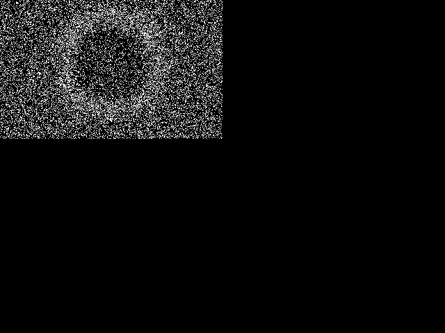
Pond is two copies of Tgas. To improve the contrast, we only show the cells which hold two particles of gas. Pond's startup has a white square of particles immersed in a sea of random particles. The particles of the white square spread out, bouncing off the other particles and creating a circular pressure wave. The fact that the square block produces a circular wave is rather striking, suggesting that this simulation really is somewhat like a physical system.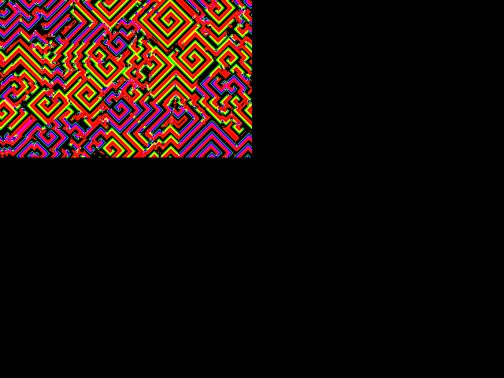
RainZha is the simplest "Zhabotinsky" style cellular automaton I have found. I call a rule a Zhabotinsky-style rule when it spontaneously generates spirals from an initial random soup. For reasons I don't yet fully understand, Zhabotinsky-style rules are fairly common in the world of cellular automata--perhaps as common as are Sierpinski gaskets in the world of fractals.
The program for RainZha is the exactly the same as the Faders program
listed under the Faders rule, with RN=8, L=2, U=3, K=2, and Y=2. See
the discussion of "NLUKY" rules
in the Theory chapter
for details.
There is an
NLUKY 72322
version of RainZha available in RC. The consequences of
larger choices of RN can be rapidly explored in JC by pressing L
for "load" and then entering n(RN2322),
where RN is any number between 0 and 127. You don't put spaces between the
numbers because JC already knows that the LUKY numbers will be single
digit, and that the other digits will be part of RN. For
larger values of RN it may take the rule too long to Zhabotinsky
down. You can ease up to a larger RN by repeatedly changing the
rule, increasing the RN value by, say, 10 each time. If this is
done, then the old spirals help seed the new ones.
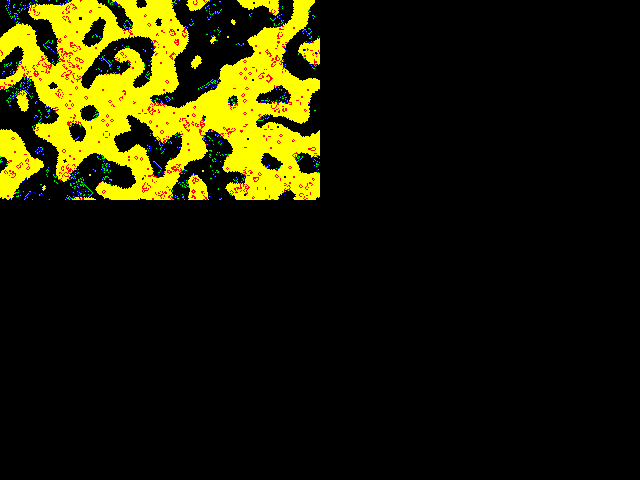
I designed Ranch using a CAM-6 board in the fall of 1987. The idea behind the rule is to run Life and Brain in an environment that is partitioned in two by Vote. Full details and program listing for Ranch are in the Theory chapter and in [Rucker89].Ranch is set to randomize planes #0 and #1 at startup. This makes Ranch work as a part of JCdemo, but has the bad effect of destroying the low two planes of any pattern you feed ranch. You might want to delete the "Rseed" lines from Ranch.PAS and rebuild Ranch.JC so that you can feed, say, Tim to it.
Ranch runs in two alternating cycles: updating the Vote boundaries and
updating the firing of Brain and Life. The cycle is controlled by bit
#7. If you randomize Ranch by pressing R, then bit #7 is
randomized as well. This puts the cells out of synch with each other,
and the rule dies wretchedly. To avoid this you can randomize the
following way: Press spacebar to halt the activity. Press R to
randomize. Press i, 7, 0 to reset all the cycle
bits. Press Enter to restart. In keystrokes:
Spacebar
r
i
7
0
Enter
The Ranch colorpalette Ranch.JCC happens to look good with many other rules, such as Hodge.
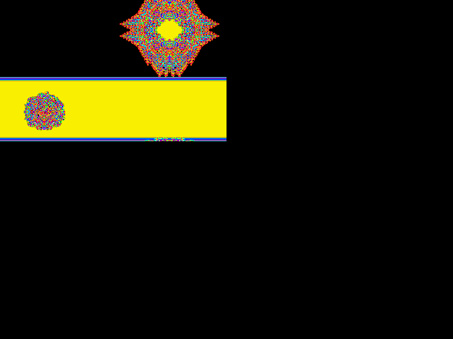
This rule was created simply to show that we can define reversible four-bit rules just as well as reversible 1-bit rules like Fractal and TimeTun.
RevEcoli is based on the rule EcoLiBra,
which calculates a new
four-bit state on the basis of the present neighborhood. To make our
rule reversible, we use the high four bits of OldState to store the
prior four-bit state PastState, and we compute the NewState by the
equation:
(We add in the 16 to make sure that the mod operation never gives us a negative number.) As was explained in our discussion of the Fractal rule above, we can exchange NewState and PastState in this equation, and this guarantees reversibility. To see RevEcoli run backwards, start it up, let it run for awhile, and then swap planes #0-#3 with planes #4-#7. In keystrokes:
l
ReveEcoli Enter
Enter
(Let it run for about 30 generations)
Spacebar
F1
o 0 4 s
o 1 5 s
o 2 6 s
o 3 7 s
F1
Enter
RevEcoli very quickly turns an ordered start into seething dog barf, so it is a bit of a surprise to see the original four bit pattern re-emerge. This is even more striking if you create the original start pattern yourself, pressing e to enter the edit mode and then drawing in designs with various states 0-15. If you have a VGA and use the Default.JCC colorpalette, the picture will look more interesting. RevEcoli can turn 16-color images into secret static that can be decoded, as long as you know the process is based on EcoLiBra!
Note that the same process can be carried out for any other rule. I used EcoLiBra because it was handy, and because EcoLiBra does not use the high four bits of OldState. Since these bits were conveniently vacant, I use them to store the cell's fourbit PastState.
This suggests a fairly simple encryption
scheme which can be carried
out with our CA. First you and your partner need to agree on i) a
number B ( 4) of bits for your rule to use, ii) a rule F
which takes B bits of OldState and eight bits of neighbor state
and gives a B-bit state we call F(PresentNeighborhood), iii) the
number T of steps to run.
4) of bits for your rule to use, ii) a rule F
which takes B bits of OldState and eight bits of neighbor state
and gives a B-bit state we call F(PresentNeighborhood), iii) the
number T of steps to run.
Now you and your partner create a rule RevF defined by
Knowing which F you plan to use is the "secret key" part of the
transmission. There are an effectively infinite number of these
keys.

Once you have RevF, you can send a message by coding your info up into a B-bit graphics screen, and running RevF on this screen for T steps. Suppose that, to make things easier for your partner, you also go ahead and use the O key to exchange the low B bits of the screen pattern with the next higher B bits of the screen pattern. Then you use Ctrl-F4 to save the pattern, as Message.JCP, and then you send Message to your partner by email or on a floppy disk. Your partner has the RevF.JC ruletable all set, and can immediately feed Message.JCP to RevF. After T cycles, your original pattern will be there on your partner's screen. Recall that the cycle number always appears on the main menu screen; although in practice it is usually pretty evident when the original message pattern has been reconstructed: all the encryption barf disappears!
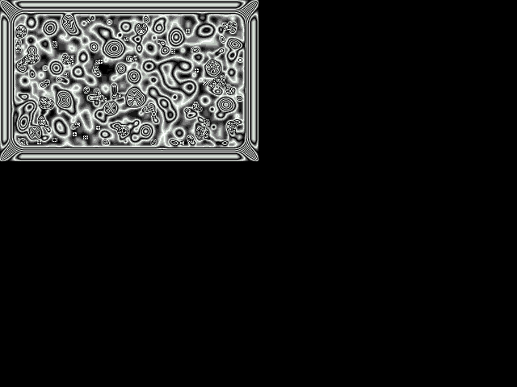
These are JC versions of the RC Rug rule. The JC Rug rules are averaging rules using the full range of 256 possible states. For each cell a neighborhood average is computed and the new state is the average plus one.In general the Rug rules will look better when the wrap is turned off. The existence of a fixed zero boundary gives the rule some information input to react to. (Recall that in the Heat rules we can fix selected cells by setting their low bits to one).
If you start a JC Rug rule on a blank screen in open nowrap mode, a
chaotic carpet will slowly grow inward, eventually filling the whole
screen. Rug averages the neighboring eight cells, but RugF averages
only the neighboring four cells. RugF runs faster, though its patterns
are prone to developing checkerboards. RugLap is a bit slower than Rug
because RugLap uses the mathematically correct averaging technique for
best approximating a solution to Laplace's equation:
Although RugLap cycles slower, it converges to a solution in many fewer steps than do Rug and RugF.
JC comes with a saved Rug pattern, the fruit of three hours computation of Rug on a blank, nowrap screen. If you press the up arrow key a few times you can break the fourway symmetry down to a bilateral symmetry. Or you can press the left arrow key a few times to mimic a touch of the RC jog-mode. Rotate your monitor 90 degrees and there's a high-res Maxine Headroom!
Many colorpalettes look good with Rug. AutoCAD gives it a sinister, seething, Giger-like quality. Stripe, Ranch, and Bob are also good colorpalettes for Rug, but best of all is Bleach, a colorpalette based on the sixteen cycle palette of RC's bleach mode.
An interesting bilaterally symmetric start for Rug can be gotten by calling eight bits of vertical texture as follows:
l
rug Enter
Alt-F6
0
8
Enter
Another good demo is:
l
ruglap Enter
c
bleach Enter
F3
F1
r
e
0(zero)
x
10 Left arrow key presses
10 Down arrow key presses
d
e
Enter
The Pascal code for the Rug rule is given in the Rule Definition chapter. RugF and RugLap are the same, except that they call, respectively, Semi4.JCO and LapInc.JCO instead of Semi8.JCO.
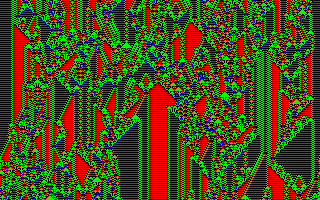
This one dimensional rule is the first rule I could truly call my own. I found it while playing with Charles Platt's one-dimensional Cell Systems simulator in 1987.If you have worked with other one dimensional simulators, you will initially be confused by the fact that JC shows one dimensional rules "upside down." That is, most simulators work by updating successive lines down the screen and then scrolling new lines on from the bottom. JC does one dimensional rules differently: JC always updates the top line of the screen and then slides all the screen lines down one to make room (scrolling the screen one line is itself a cellular automaton operation). So the new lines come into a one dimensional JC simulation from the top. Thus, where conventional one dimensional simulators grow downward, JC grows upward.
Here is the code.
PROGRAM ShortPi;
{A one dimensional rule that only looks at two bits of two
neighbors. The rule is totalistic, meaning that it only
looks at the SUM of its neighborhood. The first four
digits of the totalistic lookup table are the first four
digits of pi, taken MOD 4. The next six digits were found
by trial and error to make a rule that looks good.}
USES JCMake;
{$F+} { Required for function argument to genrule. }
FUNCTION JCRule(OldState,LL1,LL0,L1,L0,Self,
R1,R0,RR1,RR0:integer):integer;
{We will define two-bit variables LL, L, C, R, and RR
covering a cell and its four nearest neighbors. This rule
actually only uses L, C, and R, but we develop LL and RR so
this program can be used as a template for WorldType 5
programs that do use four two-bit neighbors}
VAR
LL,L,C,R,RR,Sum:integer;
BEGIN
{ Develop 2 bit values of neighbors.}
LL:= 2*LL1 + LL0;
L := 2*L1 + L0;
C := OldState AND 3;
R := 2*R1 + R0;
RR:= 2*RR1 + RR0;
Sum:=(L+C+R);
CASE Sum OF
0: JCRule:=3;
1: JCRule:=1;
2: JCRule:=0;
3: JCRule:=1;
4: JCRule:=0;
5: JCRule:=3;
6: JCRule:=2;
7: JCRule:=0;
8: JCRule:=0;
9: JCRule:=0;
END;
END;
BEGIN {Main}
WorldType := 5; { World type: four neighbor ring }
GenRule(JCRule);
END.
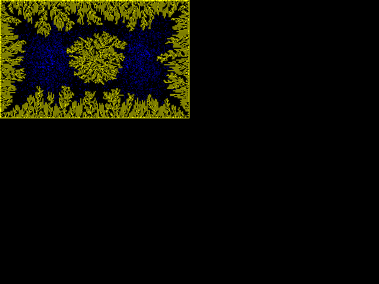
This program was inspired by [DewdneyColumn88b], where Dewdney discusses a rule which he calls SloGro. The idea behind SloGro is to have three states: blank cells, frozen cells, and gas cells. If a gas cell touches a frozen cell it becomes a frozen cell. If a gas cell is not touching a frozen cell it moves to one of its neighboring cells.Dewdney's SloGro is formulated in terms of a gas which moves randomly, and which is released into the system only one particle at a time. The gas we use in Soot is a many particle self-randomizing Tgas. Tgas particles move along the grid's main axes, and make ninety degree turns when they encounter another particle. The idea of having frozen cells along the boundary instead of just at the center is from a follow-up column to [DewdneyColumn88a], which is where I found the name "Soot."
The meaning of the bits in our implementation of Soot are as
follows.
| Bit #0 | is the machine visible bit for update |
| Bit #1 | is used for the gas |
| Bit #2 | is the wall |
| Bit #3 | is unused |
| Bits #4 & #5 | hold a position number between 0 and 3 |
| Bits #6 & #7 | control the check wall/do gas cycle If 0 do wall, if 1 do lattice A, if 2 do lattice B. |
You can put in your own gas and wall shapes by loading Soot and clearing out all the planes, putting in some random gas, using the editor to draw two disks of gas and some walls, and then turning off the editor:
l
soot Enter
F1
i a 0
i d 3
i 1 r
e
2
x (arrow keys) d (arrow keys) x (arrow keys) d
4
x (arrow keys) x (arrow keys) x (arrow keys) ... o
e
F1
Enter
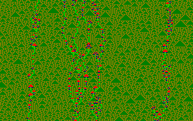
This is an instance of the standalone SoundCa program for showing semitotalistic three-cell four-state 1D rules. You can use this program as a template for running any of the SoundCA rules inside JC; simply change the fourteen numbers of the RuleTable to match the fourteen numbers you get from the screen.
This particular rule shows an interesting kind of behavior: 1D
oscillatory gliderlike patterns living on a uniform background. The
rule shows up particularly clearly if you use the colorpalette
Mask1.
PROGRAM SoundCa;
{This is a JC implementation of one of the rules from the
standalone SoundCa program from the RC disk. You can
change this rule and key in any SoundCa rule that interests
you.}
USES JCMake;
{$F+}
FUNCTION JCRule(OldState,LL1,LL0,L1,L0,Self,
R1,R0,RR1,RR0:integer):integer;
{We define two-bit variables L, C, and R.}
CONST
RuleTable: ARRAY[0..13] OF integer=(
{For an L+R Sum of: 6 5 4 3 2 1 0}
{States 0 and 3 use:} 3, 2, 1, 3, 1, 2, 0,
{States 1 and 2 use:} 0, 1, 0, 3, 3, 1, 0);
VAR
L,C,R,Sum,Index:integer;
BEGIN
L := 2*L1 + L0;
C := OldState AND 3;
R := 2*R1 + R0;
Sum:=(L+R);
CASE C OF
0,3: Index:=6-Sum;
1,2: Index:=13-Sum;
END;
JCRule:=RuleTable[Index]
END;
BEGIN {Main}
WorldType := 5; {World type: 4 neighbor ring }
GenRule(JCRule);
END.
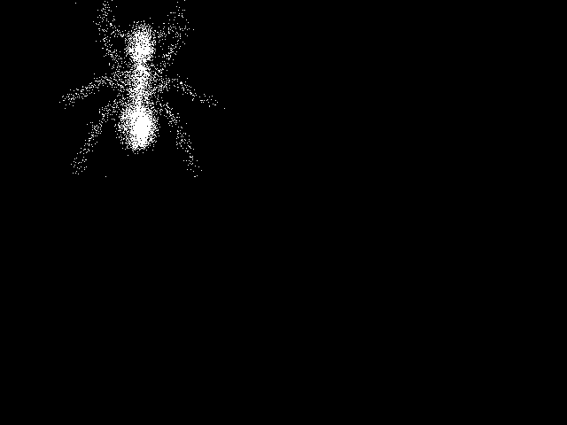
Sublime models the process by which a solid can evanesce into gas. Passing from solid to liquid is of course "melting," and the technical word for passing from solid to gas is "sublimation." Naphtha mothballs sublimate without melting into liquid at all. Ice mostly melts, but it sublimates too, especially under low atmospheric pressure; that is why the wash dries on the clothesline when it's below freezing.Our program starts up, by default, with the image of a cyberspace ant. Watch how John Walker's program devours the ant and scatters its remains to the wind. Turnabout's fair play! If you'd like to feed something else to this rule, take the following steps:
l
sublime Enter
F1
i 1 0
e
2
x (arrow keys) x (arrow keys) ... f
e
Enter
In order for the new gas to be interpreted in the right way, it is best for the rule cycle to be 0. If the rule has already been running for awhile, you can make sure it is in cycle 0 by stopping it with the spacebar and then pressing "i 6 0" and "i 7 0" to zero out the two cycle bits in #6 and #7.
A Pascal program
defining the Sublime rule appears in the
Rule Definition section.
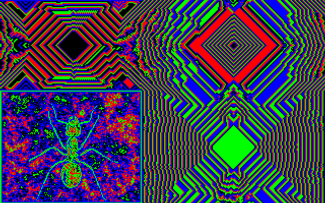
This is a reversible rule like Fractal and like RevEcoli. TimeTun is a two bit rule which arises as the reversible version of a one-bit rule called Interest.
Suppose that EveryCell only looks at N, S, E, W, and Self, and suppose that EveryCell sets Interest to 0 if all these five bits are the same (zero Interest means boring), and sets Interest to 1 if any of the five neighboring plane #0 bits are different.
Now our reversible TimeTun rule is:
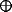
PastSelfwhere is the Exclusive Or (XOR) operator, which is 1 if its two operands differ and 0 if they are the same.
TimeTun is a particularly interesting rule to watch. If you want to start it on your own pattern, simply load it, blank the screens, and use edit mode to draw something in state #1. In keypresses:
l
timetun Enter
F1
i a 0
e
1
(Draw something using X to make marks, arrow keys to move cursor, and D for disc, R for ring, B for box, O for open polygon, C for closed polygon, F for filled polygon, etc.)
e
Enter
(Let it run for awhile and then bring it back)
o s
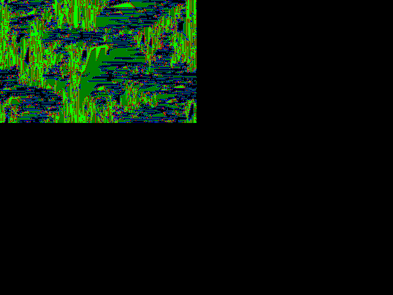
Venus is a purely combinatoric CA rule which I found simply by playing with various symmetrically arranged rule definitions. We hope that the wide distribution of CelLab will lead to the discovery of many more such unexpectedly interesting rules.I call it Venus because it produces a pattern that looks like what you might see peering out through hanging mosses at floating mats of vegetation in a swampy sea. When I was a child this is what science-fiction writers thought the surface of the planet Venus would be like.
Here is a listing of the Venus rule. When you start it,
it's a good idea to energize it by pressing R.
PROGRAM Venus;
{Start this rule on a random pattern}
USES JCmake;
{$F+}
FUNCTION JCRule(Oldstate,NW,N,NE,W,Self,
E,SW,S,SE:integer):integer;
BEGIN
OldState:=OldState AND 3;
CASE OldState OF
0 : JCRule:=2*(NW XOR SW) + W;
1 : JCRule:=2*(NW XOR NE) + N;
2 : JCRule:=2*(NE XOR SE) + E;
3 : JCRule:=2*(SE XOR SW) + S;
END;
END;
BEGIN
WorldType := 1;
GenRule(JCRule);
END.
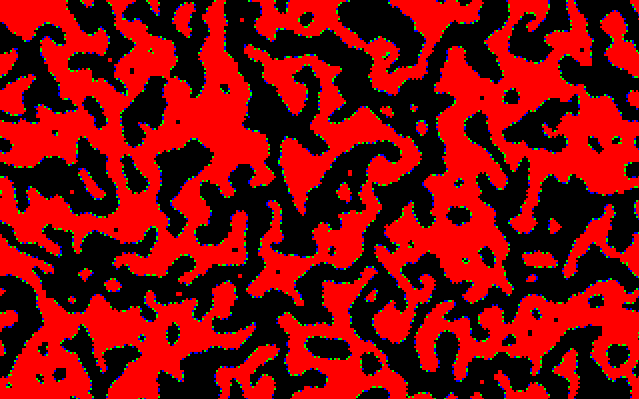
Vote is a one-bit rule where each cell calculates the NineSum of itself and its eight neighbors, and then determines its new state on the basis of the NineSum. We can regard this as EveryCell conducting a little election between 0 and 1 among the nine cells in its neighborhood. If either 0 or 1 wins by a clear majority of 6 votes or more out of the nine votes, then that is the state which EveryCell will take on. But if either 0 or 1 wins by a scant, sneaky majority of 5 votes out of the nine, then the election is overturned, and EveryCell takes on the color of the "losing" state. Vote is discussed in more detail in the Theory chapter.
The version of Vote shown here uses bit #1 as an "echo" of bit #0. This means that cells will take on different colors if they have changed state in the last generation. You can keep rerandomizing Vote by pressing R. It's a bit startling to see what organic-looking shapes can arise from such a simple rule acting on a rectangular grid.
PROGRAM Vote;
{The Vichniac voting rule on bit #0 with bit #1
used as memory}
USES JCmake;
{$F+} { Required for function argument to genrule. }
FUNCTION JCRule(Oldstate,NW,N,NE,W,Self,
E,SW,S,SE:integer):integer;
VAR
NineSum,NewSelf,NewState:integer;
BEGIN {Function}
NineSum:=NW+N+NE+E+SE+S+SW+W+Self;
CASE NineSum OF
0,1,2,3,5: NewSelf:=0;
4,6,7,8,9: NewSelf:=1;
END;
JCRule:=(Self SHL 1) OR NewSelf
END; {Function}
BEGIN {Main}
GenRule(JCRule)
END. {Main}
If you look at VoteDNA with the Default colorpalette loaded, you will see something like Vote with thick fuzzy boundaries. To make the rule look neater, I decided to set the color for the "inland" state equal to black. But what is the inland state? It is a state X which is a fixed point for the transformation:
Replacing NewX and OldX by X and solving for X, I got X=237. The VoteDNA.JCC colorpalette was gotten by taking a colorpalette and setting the color for state 237 to black. If you want to see the color get filled back in, you can press Alt-F9 followed by 237 to be able to set the color.
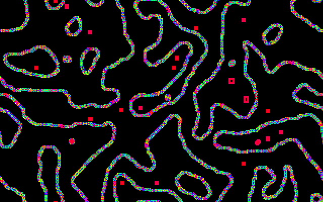
The JC VoteDNA rule, started from the pattern shown above. Pattern has been shifted slightly upward.
VoteDNA makes nice thick strings out of random starts. The color patterns that move along the strings have no clear interpretation, although they do make me think of electron microscope pictures of DNA.
PROGRAM VoteDNA;
{The Vichniac voting rule with the seven extra bits used as
memory. The additional twist here is that we increment the
memory bits by the NineSum each time.}
USES JCmake;
{$F+} { Required for function argument to genrule. }
FUNCTION JCRule(Oldstate,NW,N,NE,W,Self,
E,SW,S,SE:integer):integer;
VAR
NineSum,NewSelf,NewState:integer;
BEGIN {Function}
NineSum:=NW+N+NE+E+SE+S+SW+W+Self;
CASE NineSum OF
0,1,2,3,5: NewSelf:=0;
4,6,7,8,9: NewSelf:=1; {The usual Vote rule.}
END;
NewState:=OldState+NineSum; {To gnash in more info.}
{Now put the mem info in the 7 high bits. Do a MOD 256
by an AND $FE.}
NewState:=(NewState SHL 1) AND $FE;
JCRule :=NewState OR NewSelf; {Load the Vote result}
END; {Function}
BEGIN {Main}
PalReq:='VoteDNA';
GenRule(JCRule)
END. {Main}
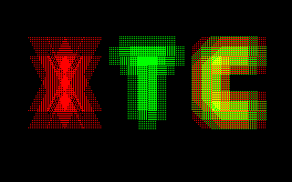
XTC is a rule for comparing two kinds of cellular automaton gas: Xgas and Tgas. The starting X is made of Xgas, the starting T is made of Tgas, and the starting C (for compare) is an overlay of Xgas and Tgas. The gasses run in separate planes and do not interact with each other; each gas only interacts with itself. Xgas moves diagonally (like the strokes of an X), and Tgas moves vertically and horizontally (like the strokes of a T). In [Margolus&Toffoli87], these gasses are called HPP-Gas and TM-Gas, respectively.
The Tgas lives in plane #1 and the Xgas in plane #2. At any time, one
of the gasses is copied into plane #0 to be visible to the other
cells. The rule has four cycles, coded by bits #6 and #7. In cycles 0
and 1 you are updating Tgas; in cycles 2 and 3 you update Xgas. If
you want to set some gas shapes of your own, use the following
keypresses once XTC is running.
Spacebar
i a 0
e
3
(Draw something in Tgas, shown in planes #0 and #1)
4
(Draw something in Xgas, shown in plane #2)
e
Enter
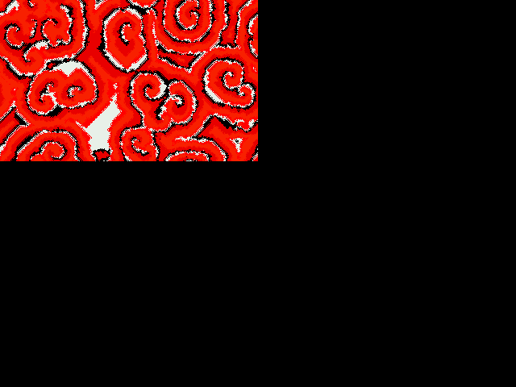
A picture of Zhabo appears on the cover of [Margolus&Toffoli87].Margolus and Toffoli make a interesting simile between the Zhabotinsky reaction and a reef of tubeworms. When a tubeworm feels safe, it sticks a plume out of its shell to seine the water for food. If a feeding tubeworm senses any disturbance nearby (e.g. the presence of several other feeding tubeworms), it retracts its plume and waits for a few cycles before feeding again.
In this specific rule, we suppose that each cell has four bits.
| Bit #0 | is the feeding bit. |
| Bits #1 and #2 | are the Time bits. |
| Bit #3 | is the alarm bit. |
Margolus and Toffoli explain that variations on this rule can be
gotten by changing the conditions for the Alarm to be set to 1. The
condition "(EightSum=2)OR(EightSum>3)" in the program listed below
makes the best patterns, but takes a really long time (two thousand
generations) to develop spirals from a random start. If you instead
use the condition "(EightSum>1)," you get tight, squarish spirals
that converge rapidly. This fast fast Zhabotinsky rule is the rule
ZHABOFF. The merely fast Zhabotinsky rule ZHABOF uses the condition
"EightSum>2." ZHABOF progresses not very much faster than ZHABO,
forming hardedged patterns. All three of these rules enjoy starting
out on the pattern RAT. In order to really show Zhabo
off, you can start it on a full random screen, let it run for an hour,
and then save the pattern as Zhabo.JCP. From then on,
you can start Zhabo up on Zhabo.JCP.
It might be interesting to write a rule which selects among these three conditions on the basis of the values of bits #7 and #6, and to initialize the pattern with three vertical stripes that hold the combos 10, 01, and 00 in bits #7 and #6.
PROGRAM Zhabo;
{The Zhabotinsky reaction of Margolus & Toffoli}
USES JCmake;
{$F+} { Required for function argument to genrule. }
FUNCTION JCRule(Oldstate,NW,N,NE,W,Self,
E,SW,S,SE:integer):integer;
VAR
EightSum,Alarm,Time,NewSelf,NewState:integer;
AlarmSet:Boolean;
BEGIN
Alarm:=(OldState SHR 3) AND 1;
Time:=(OldState SHR 1) AND 3;
EightSum:=NW+N+NE+E+SE+S+SW+W;
IF Time=0 THEN NewSelf:=1 ELSE NewSelf:=0;
IF Time>0 THEN Time:=Time-1;
IF (Self=1) AND (Alarm=1) THEN Time:=3;
IF (EightSum=2)OR(EightSum>3) THEN Alarm:=1
ELSE Alarm:=0;
NewState:=(Alarm SHL 3) OR (Time SHL 1) OR NewSelf;
JCRule:=NewState
END;
{ Main program. }
BEGIN
PalReq:='Zhabo';
GenRule(JCRule);
End.